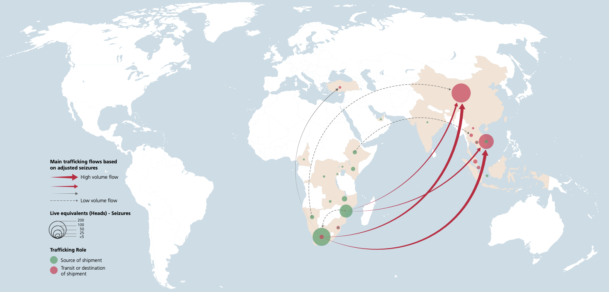

Exploring the Political Ecology of Poaching in Kruger National Park
Taylor Ouellette, Environment, Ecology, Energy Program, The University of North Carolina at Chapel Hill
Kruger National Park: A Global Rhino Poaching Hotspot
Approximately 15% of the Earth's land surface is designated as protected. A prime example is Kruger National Park (KNP), one of Africa's largest protected areas, located in the northeastern corner of South Africa, bordering Mozambique and Zimbabwe. It's celebrated for its rich diversity of wildlife, including the Big Five (lion, elephant, buffalo, leopard, and rhinoceros), and is known for its varied ecosystems from savannas to woodlands, making it a key site for conservation efforts. However, being home to the largest population of rhinos globally, it is also the largest rhino poaching hotspot, serving as an important and ongoing threat to conservation efforts in KNP.
Poaching, defined as the illegal hunting, capturing, and usually killing of wildlife, threatens biodiversity, disrupts ecosystems, and impedes conservation initiatives. In KNP, this practice is primarily fueled by the international demand for rhino horns, compounded by severe economic disparities. These illegal activities not only put additional pressure on the populations of these endangered species but also offer significant financial incentives to those involved, further complicating efforts to protect wildlife and conserve natural habitats, while pointing to the need for anti-poaching measures to factor in the socioeconomic drivers.
The Impact of Rhino Poaching on Population
This graph presents a detailed analysis of rhino poaching and population trends within Kruger National Park over the last decade. Data utilized in this analysis were sourced from the South African National Parks Annual Reports, supplemented by archived reports and media releases from the South African Department of Forestry, Fisheries, and the Environment. Compiled using Google Sheets, the visual representation highlights the relationship between poaching activities and the rhino population within the park.
This analysis reveals that poaching has been a significant factor in the decline of the rhino population throughout the years. It also points out an interesting dynamic: as the rhino population within the park decreased, the frequency of poaching incidents followed a similar downward trajectory. This pattern can likely be attributed to the dwindling number of available rhinos to poach, combined with the implementation of increasingly aggressive anti-poaching measures within the park. A notable strategy has been the dehorning of approximately 70% of rhinos within KNP by the end of 2022, aimed at making them less attractive targets for poachers.
Beyond poaching, additional factors behind the declining rhino numbers in Kruger, include natural mortality and the strategic relocation of rhinos. These relocations, whether natural or orchestrated by conservation authorities, are part of efforts to transfer rhinos to areas with lower poaching risks.
Data sourced from South African National Parks Annual Reports and other official releases. Note there are two scales on the vertical axes.
Data for this graph were compiled from SANParks' Annual Reports, Africa Geographic, and National Geographic. For certain years, population figures are estimated based on average growth rates. Note there are two scales on the vertical axes.
Elephant Poaching: A Less Significant Threat to Population
As opposed to the pressing issue of rhino poaching, elephant poaching in KNP has not been as significant, despite the park hosting a considerable elephant population and the high market value and demand for ivory globally.
The history of elephants in KNP is a testament to conservation successes and challenges alike. In 1903, no elephants roamed the area of today's park, but by the establishment of the Sabie Game Reserve in 1923 — the precursor of KNP — approximately 100 elephants had migrated from Mozambique. Over the decades, this number surged, driven by natural growth and further migrations, necessitating management interventions. By 1965, the population reached 7,000, and by 1970, it had grown to 8,821. Concerns over ecological balance and the impacts of an unchecked elephant population led to a culling campaign between 1967 and 1995, during which about 500 elephants were culled and 2,500 relocated. Despite these efforts, the population's growth rate did not wane significantly, illustrating the species' robust reproductive capacity. By 2003, the population was recorded at 13,566, and this upward trend has continued, with the population growing at an estimated annual average of 4%, nearing 30,000 by 2023.
The graph below illustrates the trajectory of Kruger's elephant population alongside annual poaching figures. In contrast to rhinos, the elephant population within KNP has largely remained unaffected in the face of poaching pressures. For further details, visit Koehl's Elephant Encyclopedia online [Koehl, D. (2024). Kruger National Park, Elephant Encyclopedia. Available at: Elephant Encyclopedia.
Spatial Dynamics of Poaching Over Time
Below are two maps illustrating the spatial dynamics of poaching over time in KNP. The first map is based on a 1946 Grading of Sections report from KNP's archives, highlighting poaching hotspots near local communities and indigenous populations, historically referred to as "natives" by the colonial administration. Initially, poaching primarily focused on subsistence rather than illegal wildlife trafficking, with significant activity concentrated in the southern sections of Kruger. The second map, titled "Distribution of Rhino Poaching Across Ranger Sections 2013-2022," shows a notable shift in poaching activities towards the South Africa-Mozambique border along Kruger's eastern boundary. According to a SANParks official, approximately 70% of rhino poaching incidents now occur along this border, reflecting a significant change in the geography of poaching within the park.
Distribution of Poaching Across Ranger Sections 1946
Legend
Rhino Poaching in Kruger: Global Media Spotlight
The graph titled 'Annual Rhino Population and Rhinos Poached' starkly illustrates the significant decline in the rhino population within KNP over recent years, identifying poaching as an important contributing factor. This alarming trend has captured the attention of international conservation organizations and media, prompting widespread calls for urgent measures to protect the remaining rhinos and put a stop to the poaching crisis. The National Geographic headline on the right, alongside the ABC News article below, offer insight into how this pressing issue continues to be framed within the media.
Conservation groups such as Save the Rhino International, International Rhino Foundation, and Stop Poaching Endangered African Rhinos (SPEAR), have also emerged, dedicating their resources to preserving rhino populations in KNP, throughout South Africa, and across the African continent. Their strategies include community engagement, awareness and educational campaigns, and fundraising for anti-poaching initiatives.
These examples collectively highlight the extensive attention and concerted efforts aimed at addressing the issue of poaching within KNP.
News clip from ABC News article, "Rhino poaching on the rise in South Africa, new figures show," published February 28, 2024 by Emma Ogao and Liezl Thom. Video caption reads "National park in South Africa addresses rhino poaching problem. At Kruger National Park in South Africa, rhino numbers have decreased by a staggering 80%, but new "miracle" baby rhinos are giving conservationists hope."

Militarized Anti-Poaching Measures
The intensification of poaching within KNP has not only garnered substantial media coverage but also prompted South African National Parks (SANParks), the governing body of KNP, to adopt increasingly militarized anti-poaching strategies. This shift towards what Lunstrum (2014) terms "green militarization" reflects a growing trend in conservation efforts globally. Green militarization is characterized by the employment of military and paramilitary personnel, technologies, training, and partnerships to bolster conservation initiatives.
In KNP, such militarized conservation methods include the deployment of armed anti-poaching units, extensive patrols, paramilitary conservation personnel, and sophisticated surveillance technology, including drones, helicopters, remote sensing, and Geographic Information Systems (GIS). Notably, entities like the South African National Defence Force (SANDF) and Hemmersbach Rhino Force have been instrumental in these efforts.
Historically, during the apartheid era, the SANDF was deployed within KNP to secure the border against the movement of anti-apartheid activists and Mozambican refugees, involving the construction of military bases and electrification of certain border segments. Post-apartheid, the SANDF's involvement in anti-poaching operations within the park has served as a means of justifying its continued existence, highlighting a broader trend of intertwining military presence with conservation practices beyond South Africa's borders, as noted by Lunstrum (2014).
The Hemmersbach Rhino Force further exemplifies this approach by safeguarding KNP's western border from poaching syndicates. This paramilitary group utilizes sniffer dogs, patrols the park perimeter with military-grade surveillance equipment, detains unauthorized entrants, supports law enforcement operations, and assists in crisis situations like social unrest or combating illegal activities within the park.
Image: Hemmersbach Rhino Force Squad.
Image: Hemmersbach Rhino Force in the Field Patrolling.

Image: 'Black Mambas' all female anti-poaching unit in Kruger National Park.The Ecologist.February 19, 2016.

Image: K9 Anti Poaching Unit at Sabi Sand Wildtuin. Singita, February 2012.
Image: New aircraft in Kruger Park for anti-poaching efforts. Times Live, October 22, 2018.
However, the deployment of such militarized measures has not been without controversy or consequence. From 2010 to 2015, it's estimated that around 200 suspected poachers killed, and the SANDF suffered the loss of seven soldiers within KNP (Pinnock 2023). This highlights the deadly consequences of these anti-poaching measures. The graph below illustrates this continuous trend, emphasizing the serious repercussions of these enforcement tactics.
Between 2013 and 2016, there was a noticeable increase in both the arrests and fatalities related to poaching, marking a period where anti-poaching efforts were significantly bolstered. This time saw considerable support from various organizations aimed at enhancing the capabilities of anti-poaching units within SANParks. Notably, the Gallet Group made a substantial donation of R359,100.00, and Lasher Tools committed to a donation of R332,158, with an ambitious target to reach R2 million by July 2016, as highlighted in a SANParks media release dated February 22, 2016. Additionally, the Global Exploration & Oceanographic Society contributed direct financial support to the Dyck Advisory Group Conservation Trust (DAG) from 2015 through 2018. This funding aimed to curb the influx of poachers entering Kruger National Park from the Mozambique border, indicating a concerted effort to address the challenges posed by poaching through financial and material support.
Source: Data compiled from various releases by the South African Department of Environmental Affairs (ZA DEA), including Rhino Poaching Statistics (20 November 2014), Arrest Statistics Media Releases (2014/2015, 2016), National Environmental Compliance Enforcement Reports (2017), and Progress on Integrated Strategic Management of Rhinoceros (ISMR) reports (January 2018, September 2018, February 2019, and the first half of 2019).
Understanding the Drivers of Poaching
Economic motivations are at the core of rhino poaching, largely driven by poverty, limited economic opportunities, and the lucrative demand for rhino horn in markets like Vietnam and Hong Kong. South Africa, noted for having the highest levels of economic inequality globally, presents a backdrop where the illegal rhino horn trade offers significant financial incentives, especially to those struggling to make ends meet.
This perspective is supported by a report titled "The People Beyond the Poaching: Interviews with Convicted Offenders in South Africa," released by TRAFFIC in September 2020. The report reveals that a unanimous 100% of the interviewees, all of whom were involved in illegal wildlife trafficking (IWT), cited income generation as the primary motivator for their actions. 73% of these individuals reported dire economic circumstances, with 7% not having enough income to survive and 66% only managing to cover basic necessities like food, water, and shelter. Importantly, 54 of the interviewees were directly involved in the illegal rhino horn trade within Kruger National Park.
These statistics highlight the desperate economic conditions that drive individuals toward rhino poaching, stressing the need to address the underlying socioeconomic challenges. The allure of the illegal rhino horn trade, coupled with South Africa's stark economic disparities, illustrates the complex interplay of factors contributing to the poaching crisis. Moving beyond the reliance on militarized anti-poaching measures, which prioritize surveillance and enforcement, is crucial. Effective conservation efforts and the protection of endangered species like rhinos necessitate addressing the root causes driving poaching. Focusing on the socioeconomic factors at play offers a more sustainable path towards resolving the challenges facing wildlife conservation.
Factors Influencing or Rationalizing Offenders' Engagement in IWT. Adapted from "The People Beyond the Poaching" report by Moneron, Armstrong, and Newton (2020), published by TRAFFIC International.
Video: An Inside Look at TRAFFIC's Interviews with Convicted Poachers in South Africa. This video sheds light on the motivations and circumstances that drive individuals to poaching. Published on 24 September 2020 by TRAFFIC. Access the full report and details at 'The People Beyond the Poaching' on TRAFFIC's website
The Global Demand for Rhino Horn
South Africa harbors approximately 75% of the world's remaining rhinos, with KNP serving as a primary sanctuary. The demand for rhino horn has seen a decline in recent years, paralleled by a reduction in poaching activities. Notably, from 2008 to 2019, there was a marked increase in the seizure of rhino horns internationally, indicating heightened efforts to combat this illegal trade. Seizures predominantly occur in airports, with traffickers favoring air travel for smuggling, often hiding the horns in luggage. Data from the World Wildlife Report (2010-2017) highlights Chinese, Vietnamese, Indian, and South African nationals as the most frequent perpetrators of rhino horn smuggling. A significant number of these incidents involve Chinese suspects apprehended in China or South Africa, and Vietnamese suspects in Vietnam or Mozambique, pointing to China and Vietnam as the primary end markets.
This situation emphasizes a stark reality: demand for rhino horn, especially among the growing upper-middle classes in Vietnam and Hong Kong, combined with the socio-economic challenges faced in South Africa—such as severe poverty and limited economic opportunities—continues to fuel poaching in KNP. Economic disparities thus emerge as a critical factor in the persistence of this illegal trade, highlighting the necessity of addressing both demand and supply-side issues to effectively combat poaching. This analysis draws upon findings from the World Wildlife Report, released by the UNODC on July 9, 2020, offering a comprehensive overview of wildlife trafficking trends.
Data sourced from: TRAFFIC (2021), "Significant Seizure Ahead of World Rhino Day Highlights Southeast Asia’s Role in Wildlife Trafficking," Access the full report here. UNODC World WISE Database; Wildlife Justice Commission (2023), "World Rhino Day: Making Headway in the Fight Against Rhino Horn Trafficking," Access the full report here.
Reported National Origin of Rhino Horn Seizures by Weight (2002-2019)
Colors on the map represent the proportion of total seizure weight attributed to each country or region as percentages, reflecting where seized rhino horns originated from 2002 to 2019. Data sourced from: CITES Illegal Trade Database and UNODC World WISE Database.
Reported National Destination of Rhino Horn Seizures by Weight (2002-2019)
Colors on the map represent the proportion of total seized weight that each country received as a destination for rhino horns from 2002 to 2019. Data sourced from "World Wildlife Crime Report: Trafficking in Protected Species," United Nations Office on Drugs and Crime (UNODC), 2020.
Trafficking Flow Map of African Rhino Horn (2014-2018)
Source: UNODC World WISE Database. The year 2018 is based on partial data.
Colonial Legacies in Kruger National Park
The Sabie Game Reserve, established in 1898, and the Singwitsi Game Reserve, proclaimed in 1903, were the precursors to what is now Kruger National Park. This protected area was created to protect the wildlife of the South African Lowveld during a period of intense colonial expansion and trophy hunting by Europeans, primarily Dutch and British. The park's management strategies were steeped in military principles, embodying the 'fortress conservation' approach—strict enforcement with little to no involvement from local communities. This approach led to the dispossession, displacement, and policing of local communities and indigenous peoples, aligning with colonial perceptions of preserving 'pristine' nature.
Early visual representations from the park, such as advertisements and photographs, further emphasize this narrative. Advertisements from the era often depicted the land as empty and wild, notably absent of local people, while photos of rangers reveal the merging of protected areas with military forces, emphasizing the combative strategies against poaching right from the park's inception. These portrayals not only reflect Kruger’s colonial roots but also show its antagonistic relationship with the local communities and indigenous communities who had historically resided in the region—groups like the Tsonga, Northern Sotho (Sepedi), and Southern Ndebele.
These communities, deeply connected to the land through hunting, fishing, and pastoral agriculture, faced severe disruptions. The establishment of the park as a protected area led to their displacement and imposed restrictions on their traditional land use. The expansion of Kruger National Park throughout the 20th century continually perpetuated the dispossession and displacement of local communities and indigenous peoples. Notably, in the mid to late 1900s, the Makuleke community in the northern section of the park was forcibly removed from their ancestral lands.
One of the first advertisements for the Kruger National Park, published in the Illustrated London News in June 1926. Image sourced from South African Eden, The Kruger National Park by Jane Carruthers, published in Arcadia, 2013, no. 12, part of the Arcadia Collection: National Parks in Time and Space.

Click and slide the green slider to see the expansion of the Sabi and Singwitsi Game Reserves into Kruger National Park
Maps by Dr. Jane Carruthers
"In 1911 Ranger Fraser, suspecting certain kraals of poaching, but unable to obtain evidence, removed residents from the reserve in co-operation with the local police and other authorities."Preliminary Report: African-Owned or Occupied Land Presently Included in National Parks by Dr. Jane Carruthers, January 1994, Box NK/2/1 Boundaries and Adjacent Areas A20 1995, Kruger National Park Archives, Stevenson-Hamilton Resource Center, Skukuza, Kruger National Park.
"I therefore know that we are taking over natives who are not lawabiding and who have little conception of disciplinary control.”Memorandum on Proposed Exchange of Land Between National Parks Board and S.A. Native Trust: Pafuri Area, Warden of Kruger National Park, January 19, 1953, Kruger National Park Archives, Stevenson-Hamilton Resource Center, Skukuza, Kruger National Park.
“Knowing the native mind I am certain that they are already resenting our possession of this ground, and their resentment will probably take the practical form of poaching, well knowing that in law we cannot proceed against them for trespassing.”Sgd J.A.B. Sandenbergh, Warden of Kruger National Park, June 20, 1946, Kruger National Park Archives, Stevenson-Hamilton Resource Center, Skukuza, Kruger National Park.
“In former years - up to about 1929 - there used to be a good deal of poaching along the border on the east by Portuguese natives culminating in a shooting affray in that year when a Portuguese poacher was killed. Since that time, when the offenders were captured on our representations, and sentenced to 14 years imprisonment by the Portuguese authorities (only one out of 12 survived to be released!) there have been no serious cases reported to this office”Grading of Sections Report by Sgd Stevenson-Hamilton, Warden of Kruger National Park, 1945, Kruger National Park Archives, Stevenson-Hamilton Resource Center, Skukuza, Kruger National Park.
Conclusion
Efforts to combat poaching in KNP emphasize the need for strategies that address not just the immediate illegal activities but also the deeper socio-economic drivers behind them. Traditional command and control approaches, while important for curbing poaching, are insufficient on their own. Long-term solutions necessitate integrating social, economic, and conservation goals, focusing particularly on alleviating poverty and creating alternative livelihoods for those residing near the park.
Adopting community-based conservation and co-management frameworks presents a promising path forward. These strategies ensure that conservation efforts are inclusive, incorporating the experiences, needs, and knowledge of local communities and indigenous peoples. By engaging these groups as active participants and beneficiaries, KNP can foster a sense of ownership and stewardship among those who are most directly impacted by conservation policies, both historically and presently.
Moving forward, it is crucial for conservation initiatives to evolve from exclusionary practices to inclusive governance models. This shift not only enhances the effective management of natural resources but also ensures that conservation efforts benefit both biodiversity and the communities deeply connected to these ecosystems.